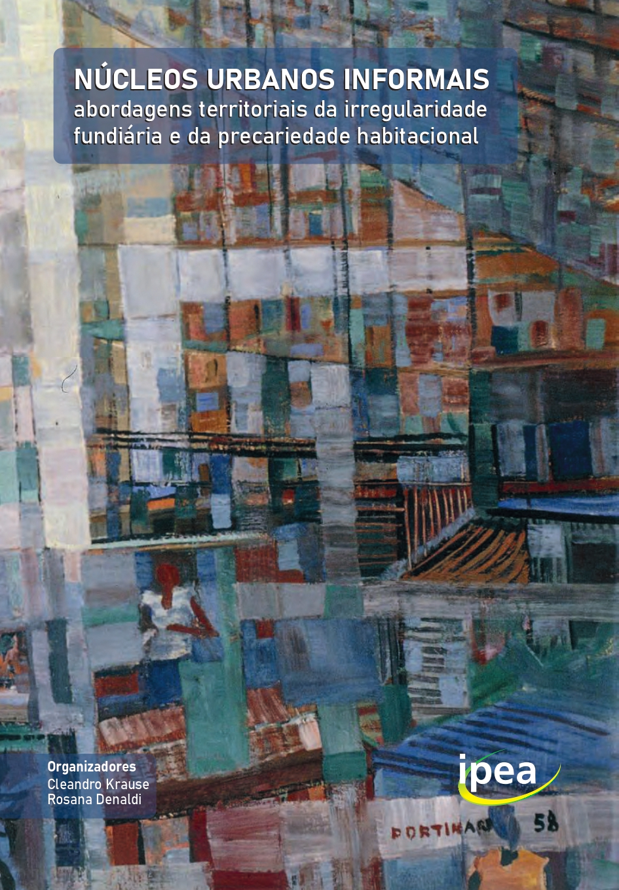
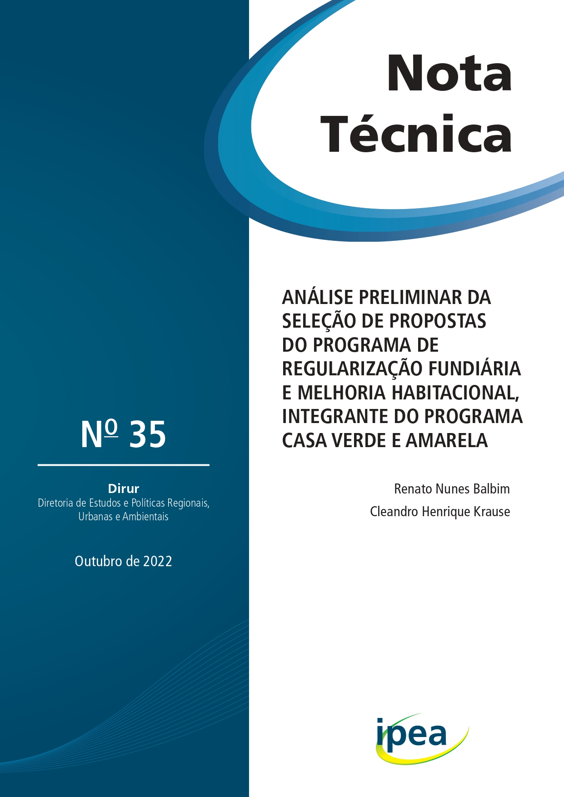
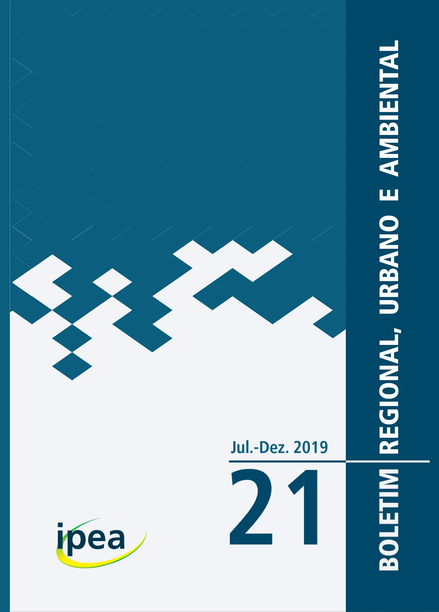

Publicações
Livro

8 de novembro de 2022
NÚCLEOS URBANOS INFORMAIS: abordagens territoriais da irregularidade fundiária e da precariedade habitacional
Cleandro Krause e Rosana Denaldi (Organizadores)
Relatórios
6 de abril de 2020
Estudo conceitual e metodológico
Rosana Denaldi, Paulo Somlanyi Romeiro, André Simionato Castro, Cleandro Henrique Krause, Tatiana Mamede Salum Chaer, Mariana Roberti Bomtempo
PDF
11 de setembro de 2020
Tipologia das formas assumidas pelos núcleos urbanos informais: desenvolvimento metodológico para sua identificação e classificação
Flávia da Fonseca Feitosa, Gilmara Gonçalves, Guilherme Frizzi Galdino da Silva, Miriam Francisca Rodrigues Couto, Pedro Reis Simões, Cleandro Henrique Krause
PDF – Apêndices
18 de setembro de 2020
Definição de pesquisa de campo e estudo de caso de núcleos urbanos informais
André Simionato Castro, Juliana Gomes Petrarolli, Mariana Roberti Bomtempo, Miriam Francisca Rodrigues Couto, Paulo Somlanyi Romeiro, Tatiana Mamede Salum Chaer, Rosana Denaldi, Cleandro Henrique Krause
PDF – Apêndices
25 de junho de 2021
Relatório de levantamento de dados e aprofundamento do conhecimento sobre os aspectos jurídicos e fundiários em uma seleção de núcleos urbanos informais
Paulo Somlanyi Romeiro, André Simionato Castro, Fernanda Carolina Vieira da Costa, Cleandro Krause, Rosana Denaldi, Tatiana Mamede Salum Chaer
PDF – Apêndices
15 de abril de 2021
Relatório parcial de pesquisa de campo contendo aprofundamento do conhecimento sobre os aspectos físicos e territoriais dos NUI no Polo Brasília
Giuliana de Freitas, Valéria Barroso da Silveira, Miriam Francisca Rodrigues Couto
PDF
16 de abril de 2021
Relatório parcial de pesquisa de campo contendo aprofundamento do conhecimento sobre os aspectos físicos e territoriais dos NUI no Polo Belo Horizonte
Raquel de Mattos Viana, Marcela Rodrigues Santos, Thaís Pires Rubioli, Mariana Roberti Bomtempo
PDF
13 de abril de 2021
Relatório parcial de pesquisa de campo contendo aprofundamento do conhecimento sobre os aspectos físicos e territoriais dos NUI no Polo Recife
Cátia Wanderley Lubambo, Fernanda Carolina Vieira da Costa, Manoela Guedes Ferreira Jordão de Vasconcelos, Tiago Gonçalves da Silva, Mariana Roberti Bomtempo
PDF
14 de abril de 2021
Relatório parcial de pesquisa de campo contendo aprofundamento do conhecimento sobre os aspectos físicos e territoriais dos NUI no Polo Porto Alegre
Heleniza Ávila Campos, Lívia Salomão Piccinini, Elisa Escosteguy Utzig, Fernanda Balestro, Bruno Gallina, Tatiana Mamede Salum Chaer
PDF – Apêndices
15 de abril de 2021
Relatório parcial de pesquisa de campo contendo aprofundamento do conhecimento sobre os aspectos físicos e territoriais dos NUI no Polo Marabá
Ana Carolina Campos de Melo, Gabriel Moraes de Outeiro, Rafael Gonçalves Gumiero, Sergio Moreno Redón, Tatiana Mamede Salum Chaer
PDF
12 de abril de 2021
Relatório parcial de pesquisa de campo contendo aprofundamento do conhecimento sobre os aspectos físicos e territoriais dos NUI no Polo Juazeiro do Norte
Alexandrina Saldanha Sobreira de Moura, David Melo Van Den Brule, Kaiena Thyelle Malaquias, Miriam Francisca Rodrigues Couto
PDF
11 de agosto de 2021
Relatório de consolidação das pesquisas de campo sobre aspectos físicos e territoriais de núcleos urbanos informais
Juliana Gomes Petrarolli, Rosana Denaldi, Cleandro Krause, Flávia da Fonseca Feitosa, Gilmara Gonçalves, Luis Felipe Bortolatto da Cunha, Mariana Roberti Bomtempo, Miriam Francisca Rodrigues Couto, Pedro Reis Simões, Tatiana Mamede Salum Chaer
PDF
21 de fevereiro de 2022
Relatório de recomendações de procedimentos para extensão da pesquisa
Cleandro Krause, Marco Aurélio Costa, Fernanda Carolina Vieira da Costa, Flávia da Fonseca Feitosa, Juliana Gomes Petrarolli, Paulo Somlanyi Romeiro, Rosana Denaldi
PDF
Outras publicações

8 de junho de 2022
Análise preliminar da seleção de propostas do Programa de Regularização Fundiária e Melhoria Habitacional, integrante do Programa Casa Verde e Amarela
Renato Balbim, Cleandro Krause
PDF

2 de março de 2020
Irregularidade fundiária e urbanística no Brasil: bases para um projeto de pesquisa
Cleandro Krause
PDF